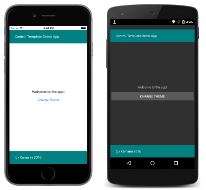

Xamarin.Forms Control Templates
Introduction
Xamarin.Forms control templates provide the ability to easily theme and re-theme application pages at runtime. This article provides an introduction to control templates.
Controls have different properties, such as BackgroundColor and TextColor, that can define aspects of the control's appearance. These properties can be set using styles, which can be chaned at runtime to implement basic theming. However, styles don't maintain a clean separation between the appearance of a page and its content, and the changes that can be made by setting such properties are limited.
Control templates provide a clean separation between the appearance of a page and its content, therefore enabling the creation of pages that can easily be themed.
Creating a ControlTemplate
Control templates can be defined at the application level or at the page level. This article demonstrates how to create and consume control templates.
specifies the appearence of a page or view, and contains a root layout, and within the layout, the controls that implement the template. Typically, a ControlTemplate will utilize a ContentPresenter to mark where the content to be displayed bu the page or view will appear. The page or view that consumes the ControlTemplate will then define content to be displayed by the ContentPredenter. The following diageam illustrates a ControlTemplate for a page that contains a number of controls, including a ContentPresenter marked by a blue rectangle:

A [ControlTemplate] can be applied to the following types by setting their ControlTemplate properties:
When a ControlTemplate is created and assigned to these types, any existing appearance is replaced with the appearance defined in the ControlTemplate. in addtion, as well as setting appearance by using the ControlTemplate property, control templats can also be applied by using styles to further expand theme ability.
Control templates can be created in XAML and in C#:
- Control templates created in XAML are defined in a
ResourceDictionarythat's assigned to theResourcecollection of a page, or more typically to theResourcescollection of the application. - Control templates created in C# are typically defined in the page's class, or in a class that can be globally accessed.
Choosing where to define a ControlTemplate instance impacts where it can be used:
ControlTemplateinstances defined at the page-level can only be applied to the page.ControlTemplateinstances defined at the application-level can be applied to page throughout the application.
Creating a ControlTemplate in XAML
To define a ControlTemplate at the application level, a ResourceDictionary must be added to the App class. By default, all Xamarin.Forms application created from a template use the App class to implement the Application subclass. To declare a ControlTemplate at the application level, in the application's ResourceDictionary using XAM, the default App class must be replaced with a XAML App class and associated code-behind, as shown in the following code example:
<Application xmlns="http://xamarin.com/schemas/2014/forms" xmlns:x="http://schemas.microsoft.com/winfx/2009/xaml" x:Class="SimpleTheme.App">
<Application.Resources>
<ResourceDictionary>
<ControlTemplate x:Key="TealTemplate">
<Grid>
...
<BoxView ... />
<Label Text="Control Template Demo App"
TextColor="White"
VerticalOptions="Center" ... />
<ContentPresenter ... />
<BoxView Color="Teal" ... />
<Label Text="(c) Xamarin 2016"
TextColor="White"
VerticalOptions="Center" ... />
</Grid>
</ControlTemplate>
<ControlTemplate x:Key="AquaTemplate">
...
</ControlTemplate>
</ResourceDictionary>
</Application.Resources>
</Application>
Each ControlTemplate instance is created as a reusable object in a ResourceDictionary. This ia achieved by giving each declaration a unique x:Key attribute, which provides it with a descriptive key in the ResourceDictionary.
The following code example shows the associated App code-behind:
public partial class App : Application
{
public App ()
{
InitializeComponent ();
MainPage = new HomePage ();
}
}
As well as setting the MainPage property, the code-behind must also call the InitializeComponent method to load and parse the associated XAML.
The following code example shows a ContentPage applying the TealTemplate to the ContentView:
<ContentPage xmlns="http://xamarin.com/schemas/2014/forms" xmlns:x="http://schemas.microsoft.com/winfx/2009/xaml" x:Class="SimpleTheme.HomePage">
<ContentView x:Name="contentView" Padding="0,20,0,0"
ControlTemplate="{StaticResource TealTemplate}">
<StackLayout VerticalOptions="CenterAndExpand">
<Label Text="Welcome to the app!" HorizontalOptions="Center" />
<Button Text="Change Theme" Clicked="OnButtonClicked" />
</StackLayout>
</ContentView>
</ContentPage>
The TealTemplate is assigned to the ContentView.ControlTemplate property by using the StaticResource markup extension. The ContentView.Content property is set to a StackLayout that defines the content to be displayed on the ContentPage. This content will be displayed by the ContentPresenter contained in the TealTemplate. This results in the appearance shown in the following screenshots:

Re-theming an Application at Runtime
Clicking the Change Theme button executes the OnButtonClicked method, which is shown in the following code example:
void OnButtonClicked (object sender, EventArgs e)
{
originalTemplate = !originalTemplate;
contentView.ControlTemplate = (originalTemplate) ? tealTemplate : aquaTemplate;
}
Binding from a ControlTemplate
Template bindings allow controls in a control temlate to data bind to pubic properties, enabling property calues on controls in the conteol template to be easily changed. This article demonstrates using template bindings to perform data binding from a control template.
A TemplateBinding is used to bind a control's property in a control template to a bindable property on the parent of the target view that owns the control template. For example, rather than defining the text displayed by Lable instances inside the ControlTemplate, you can use a template binding to bind the Label.Text property to bindable properties that define the text to be displayed.
Note that using a TemplateBinding outside of a ControlTemplate is not supported.
Creating a TemplateBinding in XAML
In XAML, a TemplateBinding is created using the TemplateBinding markup extension, as demonstrated in the following code example:
<ControlTemplate x:Key="TealTemplate">
<Grid>
...
<Label Text="{TemplateBinding Parent.HeaderText}" ... />
...
<Label Text="{TemplateBinding Parent.FooterText}" ... />
</Grid>
</ControlTemplate>
Rather than set the Label.Text properties to static text, the properties can use template bindings to bind to bindable properties on the parent of the target view that owns the ControlTemplate. However, not that the template bindings bind to Parent.HeaderText and Parent.FooterText, rather HeaderText and FooterText. This is because in this example, the bindable properties are defined on the grandparent of the target view, rather than the paren, as demonstrated in the following code example:
<ContentPage ...>
<ContentView ... ControlTemplate="{StaticResource TealTemplate}">
...
</ContentView>
</ContentPage>
The template binding uses the Parent property to return the parent element of the ContentView instance, which is the ContentPage instance. Therefore, using a TemplateBinding in the ControlTemplate to bind to Parent.HeaderText and Parent.FooterText locates the bindable properties that are defined on the ContentPage, as demonstrated in the following code example:
public static readonly BindableProperty HeaderTextProperty =
BindableProperty.Create ("HeaderText", typeof(string), typeof(HomePage), "Control Template Demo App");
public static readonly BindableProperty FooterTextProperty =
BindableProperty.Create ("FooterText", typeof(string), typeof(HomePage), "(c) Xamarin 2016");
public string HeaderText {
get { return (string)GetValue (HeaderTextProperty); }
}
public string FooterText {
get { return (string)GetValue (FooterTextProperty); }
}
Get more information at here